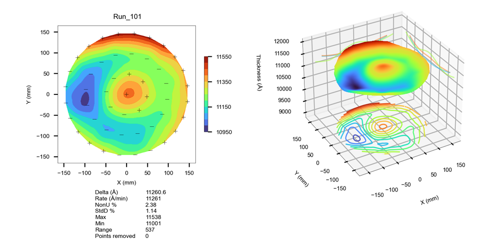
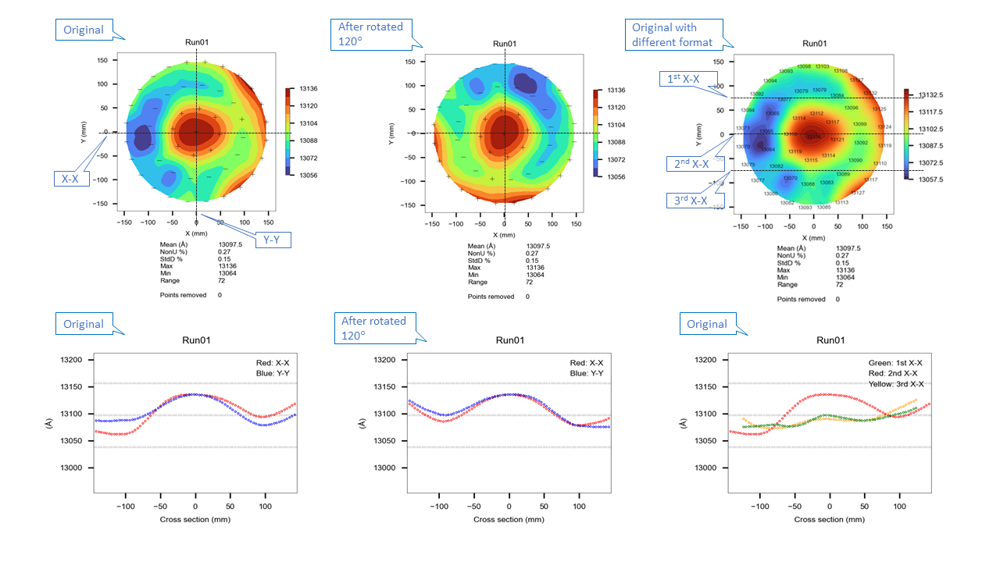
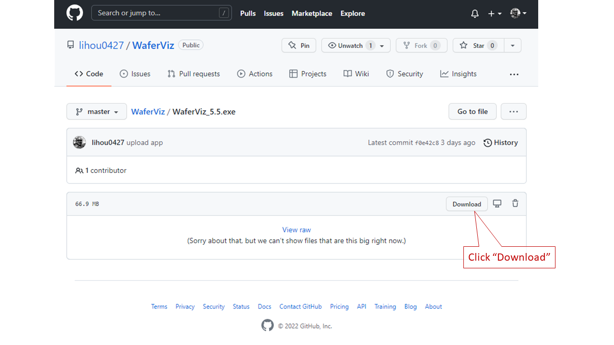
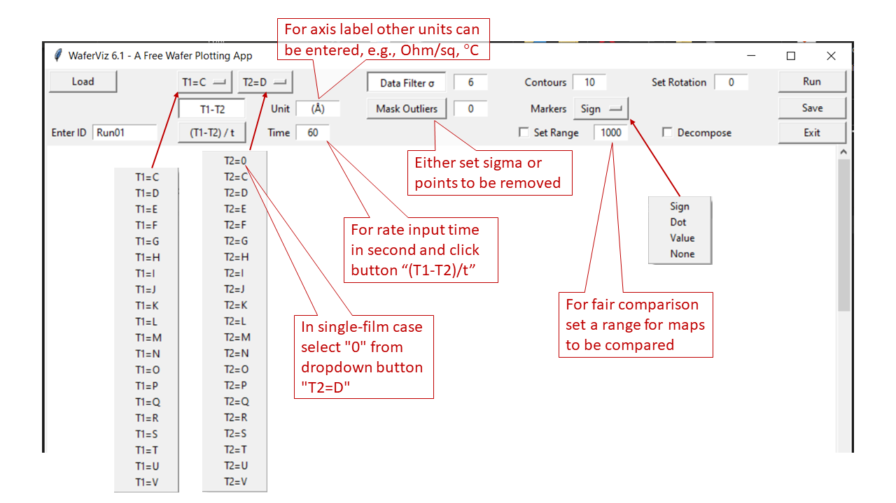
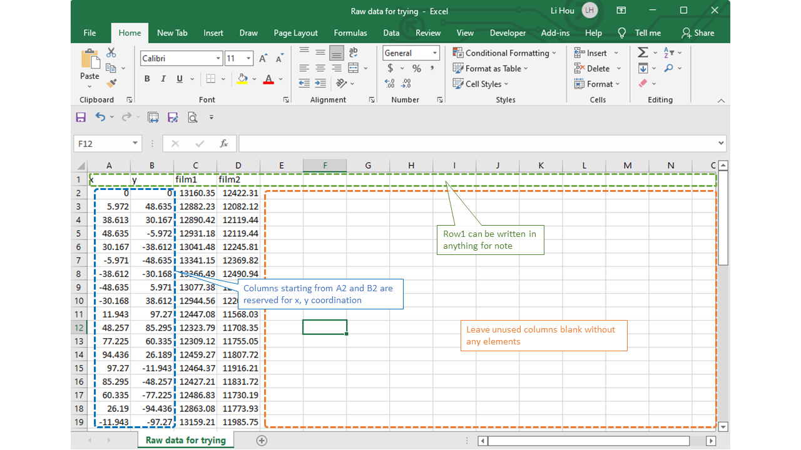

Wafer Visualization App - WaferViz
About
WaferViz is an open-source wafer plotting software intended for semiconductor engineers.
As a process engineer the author found it is helpful having a program handy for converting raw data to presentable graphs since in fabs where plotting programs are often embedded in metrology tools and not readily accessible.
Graph examples:
 
User Guide
1. Download app
Click "Download WaferViz" in the top of left column. A github screen is popped up as below.
Click "Download" button in github screen. Ignore some warnings from Windows and you should have user interface of the app as following image.
2. Prepare datasheet
Make an excel workbook that contains raw data and associated coordination you want to plot. Paste coordination into columns "A" and "B" and film thickness into columns "C" up to "V" starting from row "2". Up to 20 films can be loaded. You may want to add notes to row "1" that wouldn't affect software plotting. The data are arranged as shown in Figure 1.

3. Load datasheet
Click "Load" button in UI and select the datasheet you have prepared. Click "Open" and enter ID for this wafer. Use alphabet numbers and underscores only to avoid any errors.
4. Plot graphs
"T1" and "T2" represent thickness of film1 and thickness of film2. Use two dropdown buttons "T1=C" and "T2=D" to select the two films of pre-process and post-process in datasheet you want to plot. In single-film case just select that film from dropdown button "T1=C" and select "0" from from dropdown of button "T2=D".
Need to adjust configurations for plotting if different from that pre-set ones in the UI.5. Save graphs
Whenever the "Save" button in the UI is clicked all graphs displayed in UI are saved as an Excel file stored in a self-generated folder named "Saved_graphs". The saved file has self-generated name with id and time stamp as shown in Figure 2.
When name your file it is more safer to use alphabet numbers and underscore sign only to avoid any errors.